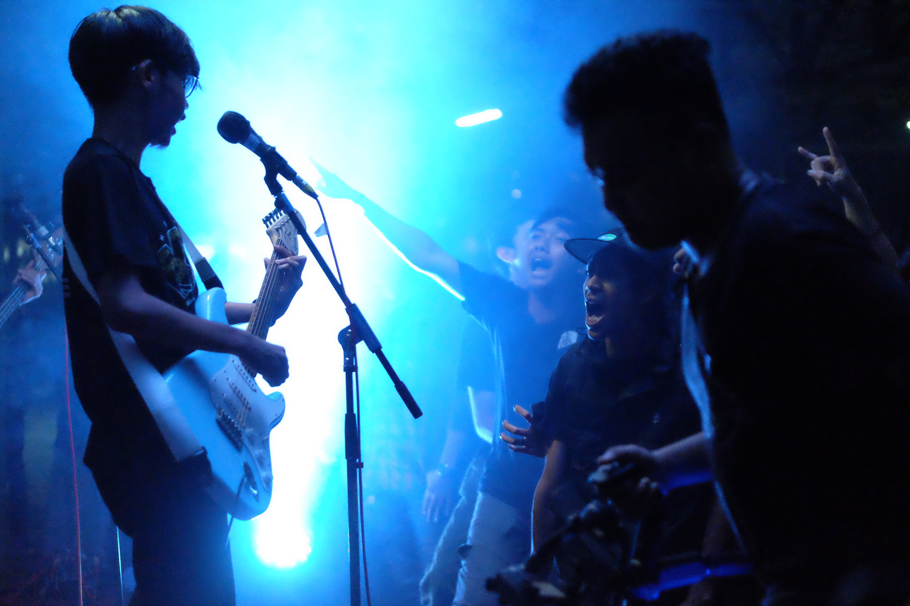
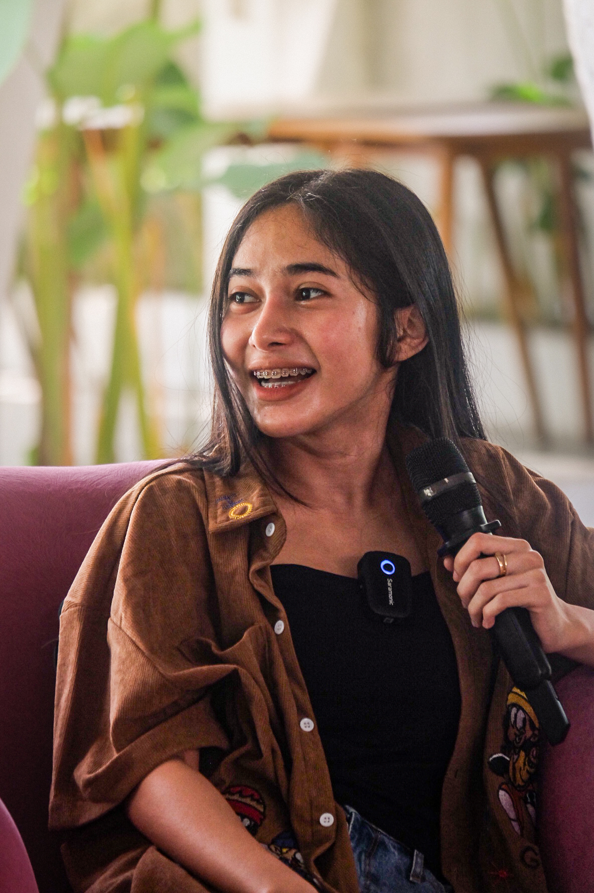
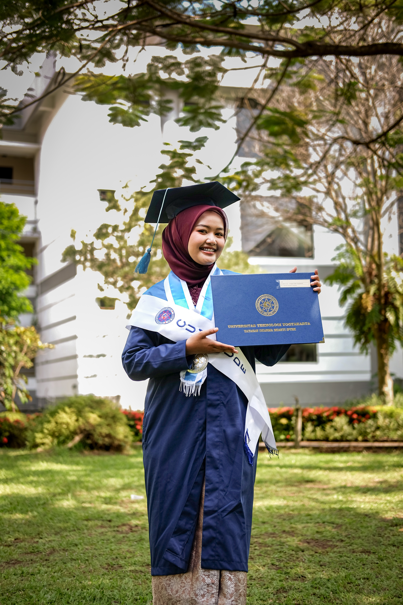
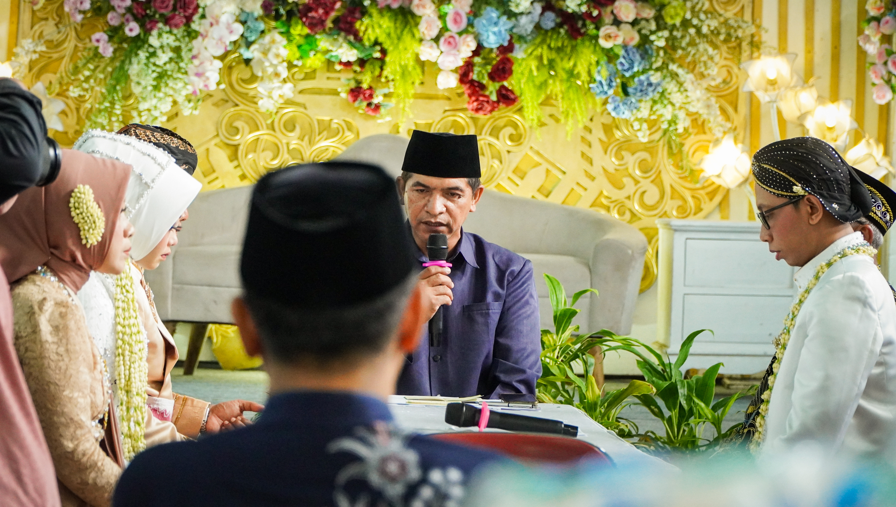
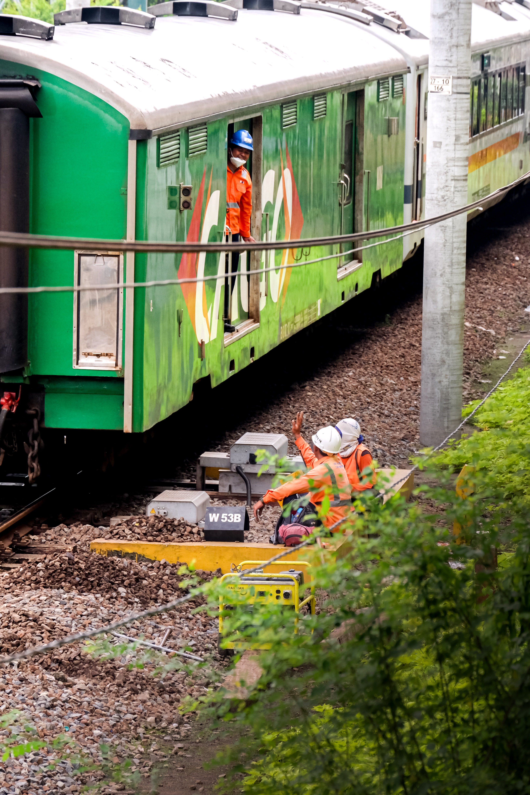
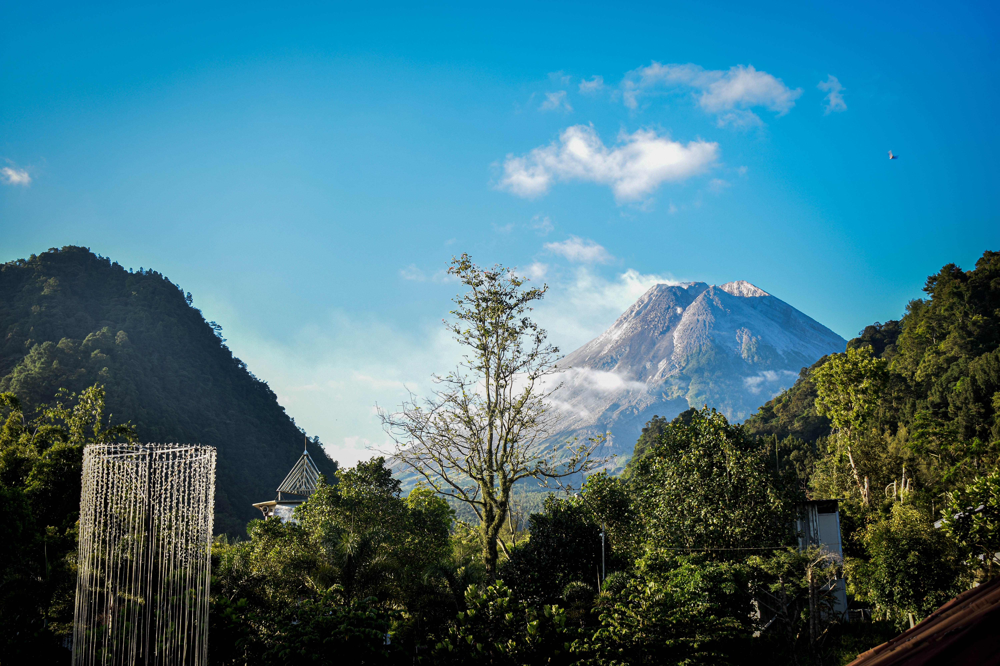
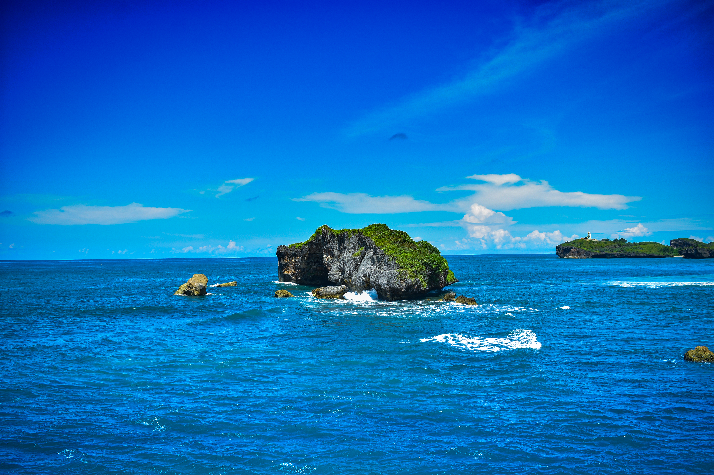
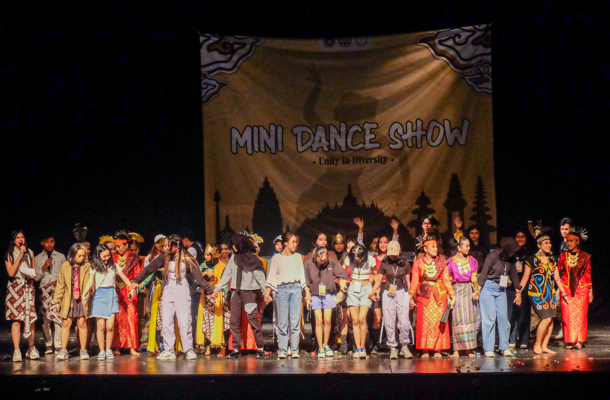
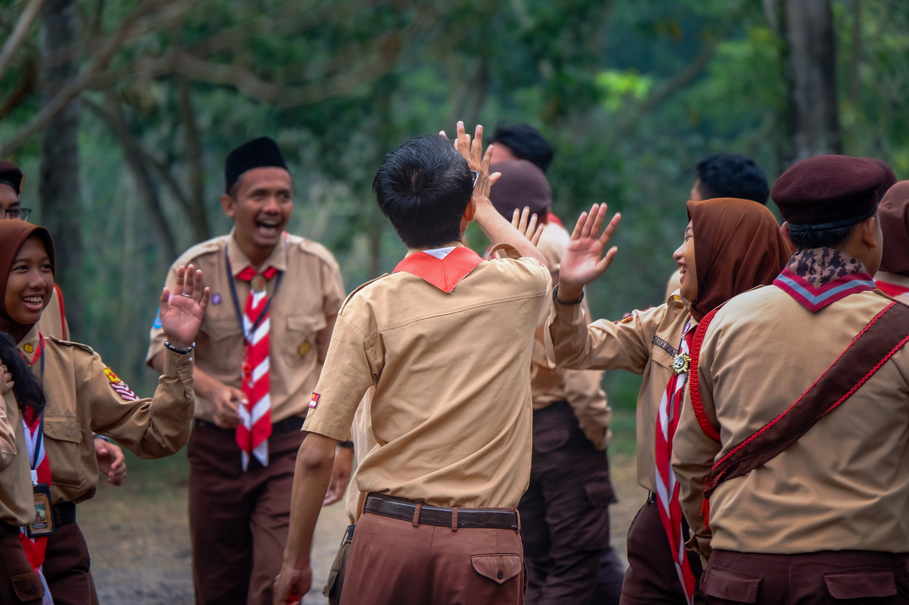
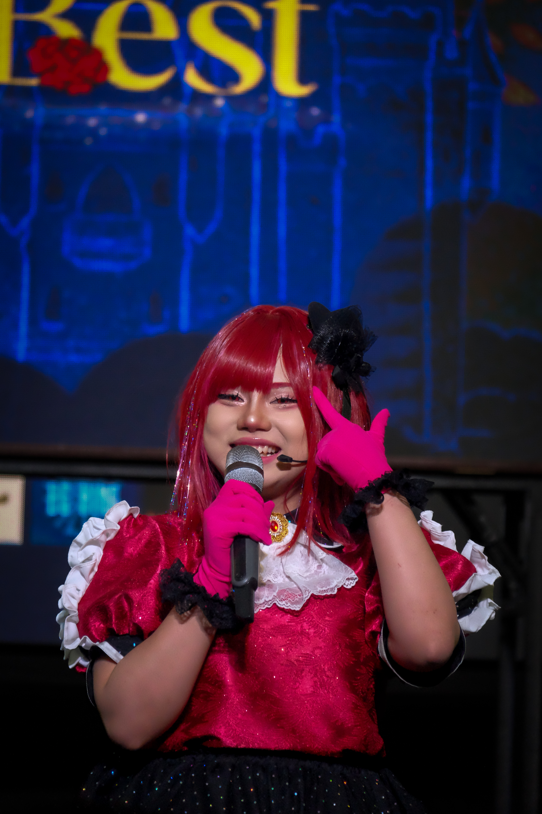

Ilham Widayanto
I'm
About
Lulusan S1 Informatika yang memiliki minat dan pengalaman di bidang administrasi serta fotografi. Berpengalaman dalam pengelolaan dokumen, pengarsipan data, penyusunan laporan, dan dokumentasi berbagai kegiatan organisasi maupun acara. Menguasai Microsoft Office, Google Workspace, Adobe Lightroom, dan Adobe Photoshop untuk menghasilkan dokumentasi yang rapi, informatif, dan berkualitas. Memiliki kemampuan komunikasi yang baik, teliti, adaptif, serta mampu bekerja di bawah tekanan dan memenuhi target pekerjaan.

Software Engineer & Fotografer.
Bersemangat dalam memanfaatkan teknologi untuk mendorong wawasan dan inovasi yang berdampak. Terampil dalam mengembangkan aplikasi pemrograman dengan Kotlin dan Python serta menguasai teknik fotografi untuk menghasilkan karya visual yang menginspirasi.
- Birthday: 18 November 2001
- Phone: +62 857-0264-9257
- City: Sleman, Special Region of Yogyakarta, Indonesia
- Age: 24
- Degree: Bachelor of Informatics
- Email: ilhamwidayanto1@gmail.com
- Freelance: Available
Berpengalaman dalam menggunakan Python dan Kotlin dalam pembuatan aplikasi. Selain itu, berpengalaman dalam mengikuti lomba dan pameran fotografi. Bersemangat untuk mempelajari teknik fotografi yang akan menghasilkan gambar yang berkualitas tinggi.
Skills
Proficient in software development technologies and photography.
Programming
Photography
Resume
Dengan latar belakang pembelajaran aplikasi dan fotografi, saya telah mengembangkan dasar yang kuat dalam pengembangan perangkat lunak dan fotografi.
Sumary
Ilham Widayanto
Lulusan S1 Informatika yang memiliki ketertarikan dan pengalaman di bidang pengembangan perangkat lunak, administrasi, serta fotografi. Berpengalaman dalam pengelolaan dokumen, pengarsipan data, dokumentasi kegiatan, dan pengembangan aplikasi berbasis web maupun Android. Memiliki kemampuan menggunakan Microsoft Office, Google Workspace, Adobe Photoshop, Adobe Lightroom, serta dasar pemrograman Python dan Kotlin. Berkomitmen untuk terus mengembangkan keterampilan, menghasilkan solusi yang bermanfaat, dan menciptakan karya visual yang berkualitas melalui perpaduan teknologi dan kreativitas.
- Sleman, Yogyakarta
Education
Sarjana Sains Informatika
2021 - 2025
University of Technology Yogyakarta, Sleman, Yogyakarta
Saat ini telah menempuh pendidikan Sarjana Sains di bidang Informatika dengan fokus pada pembelajaran pengembangan web mobile. Terlibat aktif dalam organisasi CampoerSeni pada divisi fotografi
Skills, Achievements & Other Experience
- Experience
- Human Resources Intern TVRI Yogyakarta (September 2024 December 2024).
- Vice Head of Division UKM Campoer Seni UTY (September 2022 September 2023).
- Documentation Committee Indonesia Education Conference 2026.
- Event Documentation Photographer for various campus events and exhibitions.
- Certification
- Data Engineer Professional RapidMiner, 2023.
- Machine Learning Professional RapidMiner, 2023.
- Internship Certificate TVRI Yogyakarta, 2024.
- Driving License: SIM A & SIM C.
- Skills
- Microsoft Office (Word, Excel, PowerPoint)
- Google Workspace
- Document Management & Data Entry
- Adobe Photoshop & Adobe Lightroom
- Photography & Event Documentation
- Basic Python & Kotlin
Professional Experience
Wakil Ketua Divisi fotografi
2022 - 2023
Sleman, Yogyakarta
- Sebagai wakil, saya berkesempatan untuk belajar cara bekerja sama dalam divisi, dan memberikan bantuan dalam pelaksanaan program kerja divisi.
- Telah membantu dalam dokumentasi acara kampus maupun luar kampus.
- Ikut serta dalam pameran fotografi dengan mengundang kampus lain dari Jogja, Solo, dan Semarang.
Portfolio
- All
- Konsep
- Portrait
- Landscape
- Documentation












Ilham Widayanto
Lulusan Universitas Teknologi Yogyakarta, jurusan Informatika.
Moto:"Menangkap Keindahan dengan Lensa, Mengembangkan Solusi dengan Kode."
Let's Connect
Interested in my administrative work or photography? Feel free to connect with me through my social media.
Instagram
@Ilhamwdyt
LinkedIn
Connect with me